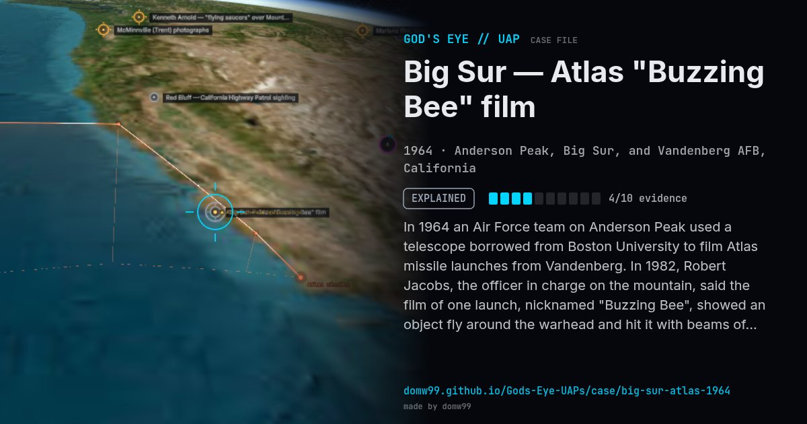

Big Sur — Atlas "Buzzing Bee" film

In 1964 an Air Force team on Anderson Peak used a telescope borrowed from Boston University to film Atlas missile launches from Vandenberg. In 1982, Robert Jacobs, the officer in charge on the mountain, said the film of one launch, nicknamed "Buzzing Bee", showed an object fly around the warhead and hit it with beams of light, and that the film had been confiscated. The project engineer said it showed decoy deployment.
Explanation
Project engineer Kingston George wrote in 1993 that the film showed the re-entry vehicle releasing decoy warheads and chaff, a classified technology at the time, which Jacobs was not cleared to know about.
What was seen
Shape: Object circling a missile warhead
Witnesses: 1369th Photographic Squadron team
Duration: Seconds, on film